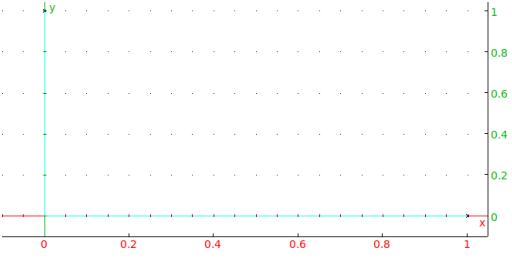
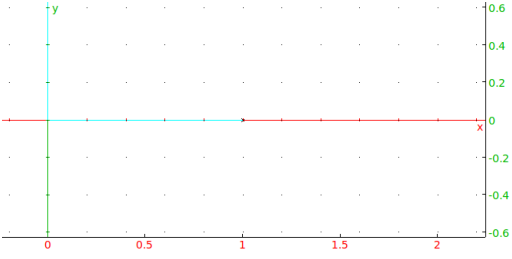
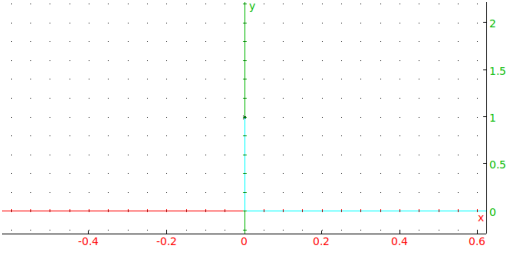

Input:
inter(circle(0,1),line(1,i))
Output:

which are the points at (1,0) and (0,1).
To get just one of the points, use the usual list indices.
Input:
inter(circle(0,1),line(1,i))[0]
Output:

just one of the points.
To get the point closest to (0,1/2):
Input:
inter(circle(0,1),line(1,i),i/2)
Output:
